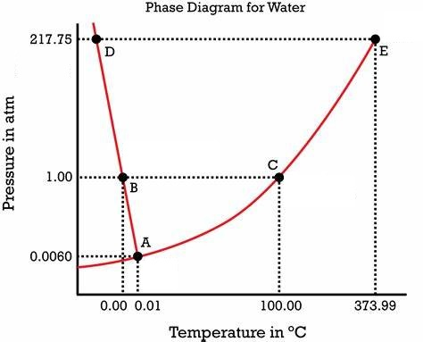

1) Place the following substances in order of decreasing boiling point. H2O N2 CO
A) CO > H2O > N2
B) H2O > CO > N2*
C) CO > N2 > H2O
D) N2 > CO > H2O
N2 only has London dispersion forces, so it has the lowest boiling point. CO is polar, so it has dipole-dipole forces H2O can hydrogen bond, so it will have the highest boiling point.
2) Using the phase diagram below, what is the temperature and pressure at the critical point? 
A) 217.75 atm and 373.99°C*
B) 1.00 atm and 100.00°C
C) 373.99 atm and 217.75°C
D) 100 atm and 1.00°C
The critical point is point E, which occurs at 217.75 atm and 373.99°C.
3) Which of the following increases the rate of vaporization?
A) Decreasing the surface area
B) Decreasing temperature
C) Strong intermolecular bonds
D) Increasing the surface area*
Increasing the surface area, weak intermolecular bonds, or increasing the temperature will lead to an increased rate of vaporization.
4) Which of the following would you expect to have the lowest surface tension?
A) CH3CH2CH2CH2CH2CH2CH3
B) CH3CH2CH2CH2CH2CH3
C) CH3CH2CH2CH2CH2CH2CH2CH3
D) CH3CH2CH2CH2CH3*
The shortest carbon chain will have the smallest London dispersion forces, thus the lowest surface tension.
5) Which of the following has the lowest viscosity?
A) *
B)
C)
D)
will have the lowest viscosity, because it has the fewest iodines, which means it has the lowest molar mass, and the lowest London dispersion forces.
6) Which of the following statements is TRUE?
A) Increasing the pressure on a solid usually causes it to become a liquid
B) The potential energy of two distant oppositely charged molecules decrease as they get closer to one another*
C) Energy is given off when the attraction between two molecules is broken
D) Intermolecular forces are generally stronger than bonding forces
It is true that the potential energy of molecules decrease as they get closer to one another. Ionic and covalent bonds are stronger than intermolecular forces. Energy is required to break bonds, energy is not released when bonds are broken. Generally speaking, increasing pressure will cause a chemical to go from gas to liquid to solid (the exception being chemicals where the solid has a lower density than the liquid). Increasing temperature will cause a chemical to go from gas to liquid to solid.
7) Which of the following 3 alkane isomers would you expect to have the lowest boiling point?
A) Since they are isomers, they will have the same boiling point.
B) Neopentane*
C) Pentane
D) Isopentane
Neopentane is the most branched alkane, so it will have the least surface area interacting for London dispersion forces. Thus it will have the lowest intermolecular forces and the lowest boiling point.
8) Identify the place which has the highest boiling point of water.
A) Mt. Everest, 29,035 feet
B) Death Valley, 282 feet below sea level*
C) New Orleans, sea level
D) Denver, Colorado, 5280 feet
The highest boiling point will be where the atmospheric pressure is the highest. Atmospheric pressure will be the highest at the lowest elevation.
9) How much energy is required to vaporize 51.9 g of acetone (C3H6O) (58.08 g/mol) at its boiling point, if its ΔHvap is 29.10 kJ/mol?
A) 0.0307 kJ
B) 0.894 kJ
C) 26.0 kJ*
D) 104 kJ
51.9 g x 1mol/58.08g x 29.10 kJ/mol = 26.0 kJ
10) What is the main reason why the boiling point of NH3 is much higher than that of PH3?
A) NH3 has stronger London dispersion forces than PH3
B) NH3 can hydrogen bond whereas PH3 cannot*
C) NH3 has dipole-dipole forces whereas PH3 does not
D) PH3 can hydrogen bond whereas NH3 cannot
NH3 has a hydrogen attached to a N, O, or F, so it can hydrogen bond whereas PH3 does not, so it cannot hydrogen bone. Hydrogen bonding gives NH3 a higher boiling point.
11) In which of the following figures is the cohesive force greater than the cohesive force?
A) The image labeled A
B) The image labeled B
C) The image labeled C*
D) None of the above.
When cohesive force is greater than the adhesive force the fluid will have a weaker attraction to the side of the tube as it does other molecules in the fluid, so it will cause the meniscus to curve downwards on the side, thus image C is the answer.
12) Which substance has the highest intermolecular forces?
A) Ne
B) Ar
C) Kr
D) Xe*
Xe has the highest intermolecular forces because it is the largest atom (with the highest London dispersion forces).
13) If three capillary tubes are dipped into water, which of the following images would most accurately represent the relative heights of the water level in the three capillary tubes?
A) *
B)
C)
D)
shows the thinnest tube with the highest height of liquid, and the widest tube with the lowest height of liquid, so it is the correct answer.
14) Determine the normal boiling point (at 760 mm Hg) of a substance whose vapor pressure is 49.4 mm Hg at 51.1°C and has a ΔHvap of 37.6 kJ/mol.
A) 271 K
B) 325 K
C) 52.7 K
D) 403 K*
To determine the normal boiling point of a substance, we need to find the temperature at which its vapor pressure is equal to the atmospheric pressure at 760 mm Hg.
Given: T1: 51.1°C T2: ? P1: 49.4 mm Hg P2 = 760 mm Hg (normal pressure) ΔHvap = 37.6 kJ/mol R = gas constant (8.3145 J/mol·K)
To calculate the normal boiling point, we can use the Clausius-Clapeyron equation:
ln(P2/P1) = -(ΔHvap/R) * (1/T2 - 1/T1)
Converting the given values to K and J: T1: 51.1°C + 273.15 = 324 K ΔHvap = 37.6 kJ/mol = 37.6 × 1000J/1 kJ = 3.76x104 J/mol
Simplifying: ln(15.4) = -4520 K * (1/T2 - 1/324 K)
Now, let's solve for T2: -0.000604 K = (1/T2 - 1/324 K) -0.000604 1/K = 1/T2 - 1/324 K -0.000604 1/K + 1/324 1/K = 1/T2 0.00248 1/K = 1/T2
Taking the inverse of both sides: 403 K = T2
15) What is the strongest type of intermolecular force present in CH2O?
A) Hydrogen bonding
B) Dipole-dipole forces*
C) London dispersion forces
D) Ion-dipole forces
E) None of the above.
The strongest type of intermolecular force present in CH2O is dipole-dipole forces, because CH2O is polar but cannot hydrogen bond.
16) Choose the substance with the highest ΔHvap.
A) CH4
B) OF2
C) NH3
D) KF*
KF is an ionic compound. Ionic bonds are stronger than intermolecular bonds, so it will have the highest ΔHvap. NH3 can hydrogen bond, thus would have the second highest ΔHvap. OF2 is polar (dipole-dipole forces), thus would have the third highest ΔHvap. CH4 is non-polar (only London dispersion forces), thus would have the lowest ΔHvap.
17) Place the following substances in order of increasing vapor pressure at a given temperature. SF6 SiH4 SF4
A) SF4 < SF6 < SiH4*
B) SiH4 < SF4 < SF6
C) SF6 < SF4 < SiH4
D) SF6 < SiH4 < SF4
SF4 is see saw shaped, so it is polar and has the lowest vapor pressure. SF6 is octahedral and SiH4 is tetrahedral, which are symmetrical shapes, so they are non-polar. However SF6 is much larger, thus will have more London dispersion forces, and a lower vapor pressure.
18) How much energy is required to heat 33.4 g H2O from a liquid at 68.0°C to a gas at 130°C? ΔHvap = 40.7 kJ/mol Cliquid = 4.184 \( \frac{J}{g°C} \) Cgas = 2.01 \( \frac{J}{g°C} \) Csolid = 2.09 \( \frac{J}{g°C} \) Tmelting = 0°C Tboiling = 100°C
A) 1370 kJ
B) 93.7 kJ
C) 6560 kJ
D) 81.9 kJ*
To calculate the energy required to heat water from a liquid at 68.0°C to a gas at 130°C, we need to consider the following steps:
Heating the liquid water from its initial temperature to its boiling point.
Vaporizing the liquid water at its boiling point to gas.
Heating the water vapor from it's boiling point to 130°C.
Step 1: Heating the liquid water First, we calculate the energy required to heat the liquid water from 68.0°C to its boiling point at 100°C.
q1 = m x Cliquid x ΔT1
where: q1 = energy required (in joules) m = mass of water (in grams) Cliquid = specific heat capacity of liquid water (in J/g-°C) ΔT1 = change in temperature (final temperature - initial temperature) Cgas = specific heat capacity of liquid water (in J/g-°C)
Given: m = 33.4 g Cliquid = 4.184 J/g-°C ΔT1 = 100°C - 68.0°C = 32.0°C
q1 = (33.4 g) x (4.184 J/g-°C) x (32.0°C) q1 ≈ 4470 J x \( \frac{1 kJ}{1000 J} \) = 4.47 kJ
Step 2: Vaporizing the liquid water Next, we calculate the energy required to vaporize the liquid water at its boiling point.
q2 = n x ΔHvap
where: q2 = energy required (in joules) n = number of moles of water ΔHvap = enthalpy of vaporization (in J/mol)
To calculate the number of moles of water, we use the molar mass of water (H2O), which is approximately 18.02 g/mol.
mol = 33.4 x \( \frac{1 mol H_2O}{18.02 g H_2O} \) ≈ 1.85 mol
Given: ΔHvap = 40.7 kJ/mol
q2 = (1.85 mol) * (40.7 kJ/mol) ≈ 75.4 kJ
Step 3: Heating the water vapor, we calculate the energy required to heat the water vapor from 100°C to 130°C.
q3 = m x Cliquid x ΔT2
where: q3 = energy required (in J) m = mass of water (in grams) Cgas = specific heat capacity of liquid water (in J/g-°C) ΔT1 = change in temperature (final temperature - initial temperature)
Given: m = 33.4 g Cliquid = 2.01 J/g-°C ΔT1 = 130°C - 100°C = 30.0°C
q3 = (33.4 g) x (2.01 J/g-°C) x (30.0°C) q3 ≈ 2010 J x \( \frac{1 kJ}{1000 J} \) = 2.01 kJ
Total energy required: The total energy required is the sum of q1, q2 and q3.
Total energy = q1 + q2 + q3 ≈ 4.47 kJ + 75.4 kJ + 2.01 kJ
Total energy ≈ 81.9 kJ
19) (SLO 1.5) List the compounds below in decreasing boiling point order. CH3CH2CH2CH3 He CH3CH2CH2OH
A) He > CH3CH2CH2OH > CH3CH2CH2CH3
B) CH3CH2CH2CH3 > He > CH3CH2CH2OH
C) CH3CH2CH2OH > CH3CH2CH2CH3 > He*
D) CH3CH2CH2CH3 > CH3CH2CH2OH > He
CH3CH2CH2OH can hydrogen bond, so it will have the boiling point. CH3CH2CH2CH3 is a large nonpolar molecule, so it will have high London dispersion forces. He is small and nonpolar, so it will have a low amount of London dispersion forces, and have the lowest boiling point.
20) (SLO 1.2) In liquid ammonia NH3, which intermolecular forces are present?
A) Only dispersion and dipole-dipole forces are present
B) Only hydrogen bonding forces are present
C) Dispersion, hydrogen bonding, and dipole-dipole forces are present*
D) Only dipole-dipole and ion-dipole forces are present
ammonia NH3 can hydrogen bond, is polar (thus dipole-dipole forces), and will have London dispersion forces.
21) Which of the following describes how you would prepare a 2.0 m (molality) solution of KI?
A) Measure out 1.0 moles of KI, then add 2 Kg of water.
B) Measure out 2.0 moles of KI, then put it in a volumetric flask and add enough water to produce 1 L of solution.
C) Measure out 2.0 moles of KI, then add 1 Kg of water.*
D) Measure out 1.0 moles of KI, then put it in a volumetric flask and add enough water to produce 2 L of solution.
Measure out 2.0 moles of KI, then add 1 Kg of water. It is important to remember that molality is moles of solute over kilograms of solvent.
22) Determine the vapor pressure of a solution at 25°C that contains 73.3 g of glucose (C6H12O6) (180.2 g/mol) in 500 mL of water (18.02 g/mol). The vapor pressure of pure water at 25°C is 23.8 torr, and the density of water is 1.00 g/mL.
A) 0.349 torr
B) 23.5 torr*
C) 1620 torr
D) 0.344 torr
73.3 g of glucose (C6H12O6) x (1 mol glucose / 180.2 g glucose) = 0.407 mol glucose 500 mL water x (1.00 g water/ 1 mL water) x (1 mol water / 18.02 g water) = 27.7 mol water Total moles solution = 0.407 mol glucose + 27.7 mol water = 28.2 mol Xwater = 27.7 mol water / 28.2 mol = 0.986 Psolution = Xwater x Ppure water = 0.986 x 23.8 torr = 23.5 torr
23) Determine the Henry's law constant for an unknown gas in water at 25°C if the unknown gas at a pressure of 0.0296 atm produces a solution with a concentration of 2.07 M.
A) 69.9 M/atm*
B) 0.0143 M/atm
C) 1.53 M/atm
D) 0.0613 M/atm
S = Kh * p Kh = S/p Kh = 2.07 m/0.0296 atm = 69.9 M/atm
24) What mass (in g) of NH3 (17.03 g/mol) must be dissolved in 550. g of methanol (32.04 g/mol) to make a 0.522 m solution?
A) 0.287 g
B) 9.21 g
C) 0.153 g
D) 4.89 g*
What mass (in g) of NH3 (17.03 g/mol) must be dissolved in 550. g of methanol (32.04 g/mol) to make a 0.522 m solution? 0.550 Kg solution x (0.522 molsolute / 1 Kg solvent) X (17.03 g solute / 1 mol solute) = 4.89 g
25) How many moles of KBr are contained in 394 g of water in a 0.120 m KBr solution?
A) 0.492 mol
B) 0.0473 mol*
C) 5.63 mol
D) 47.3 mol
394 g water x (1 Kg / 1000 g)= 0.394 Kg 0.394 Kg of water X (0.120 mol KBr / 1 Kg water) = 0.0473 mol
26) Which of the following would result in an endothermic reaction?
A) The reactants have weaker bonds than the products
B) The reactants are at a higher potential energy than the products
C) The reactants are at a lower potential energy than the products*
D) The products and reactants are at the same potential energy level
Exothermic: Products have stronger bonds/reactants have weaker bonds The product is at a lower potential energy
Endothermic: Products have weaker bonds/reactants have stronger bonds The product is at a higher potential energy
27) What is the mol fraction of ethanol, C2H5OH (46.07 g/mol), in a solution of 77.3 g of ethanol and 300 g of water (18.02 g/mol)?
A) 0.0916*
B) 9.92
C) 0.908
D) 0.101
77.3 g ethanol x (1 mol ethanol / 46.07 g ethanol) = 1.68 mol ethanol 300 g water x (1 mol water / 18.02 g water) = 16.7 mol water Total moles solution = 1.68 mol ethanol + 16.7 mol water = 18.3 mol mole fraction of ethanol = 1.68 mol ethanol / 18.3 mol = 0.0916
28) Which of the following have a great impact on the solubility of a solid in a liquid?
A) Temperature and atmospheric pressure
B) Atmospheric pressure only
C) Temperature only*
D) None of the above.
Only temperature has any significant impact on the solubility of a solid (increasing the temperature increases the solid's solubility). Both temperature and partial pressure of the gas would have a significant impact on the solubility of a gas (increasing the temperature decreases the solubility of a gas, and increasing the partial pressure of the gas increases the solubility of a gas).
29) The enthalpy of solution for a compound is -26 kJ/mol, and the enthalpy of hydration for the compound's ion X- is -460 kJ/mol. Calculate the lattice energy (in kJ/mol) of the compound.
A) 434 kJ/mol*
B) 486 kJ/mol
C) -434 kJ/mol
D) -486 kJ/mol
To solve this problem, we can use the following equation:
ΔHsolution = ΔHlattice + ΔHhydration
Where: ΔHsolution = Enthalpy of solution ΔHlattice = Lattice energy ΔHhydration = Enthalpy of hydration
We are given: ΔHsolution = -26 kJ/mol ΔHhydration = -460 kJ/mol
Rearranging the equation, we can solve for ΔHlattice:
30) What is the parts per million (ppm) of a 0.00300 m (molality) aqueous KOH (molar mass 56.11 g/mol) solution?
A) 168 ppm*
B) 5940 ppm
C) 3.00 ppm
D) 0.000168 ppm
1 kg H2O x 1000 g/1 kg = 1000 g H2O Total grams of solution = 0.168 g + 1000 g = 1000. g ppm = (0.168 g KOH)/(1000. g solution) x 106 = 168 ppm
31) A sealed container contains 0.533 L of water with an atmosphere of oxygen gas. What is the concentration of O2 in the water if the external pressure is 5.60 atm given that kH for O2 is 1.66 × 10-6 M/mm Hg at this temperature (1 atm = 760 mm Hg)?
A) 1.22x10-8 M
B) 0.00706 M*
C) 4440 M
D) 9.30x10-6 M
Step 1: Convert the external pressure from atm to mm Hg: 5.60 atm x 760 mmHg / 1atm ≈ 4256.0 mm Hg
Step 2: Calculate the concentration of O2 in water using Henry's law: Concentration of O2 = kH * Partial pressure of O2 Partial pressure of O2 = External pressure
Concentration of O2 = 1.66 × 10-6 M/mm Hg x 4256.0 mm Hg Concentration of O2 ≈ 0.00706 M
32) A 3.80 L sample of an aqueous solution contains 0.170 g of sodium ions. Determine the concentration of sodium ions in ppm if the density of the solution is 1.03 g/mL.
A) 43.4 ppm*
B) 0.0000434 ppm
C) 4.34x104 ppm
D) 48.3 ppm
3.80 L solution x (1000 mL / 1 L) x (1.03 g / 1 mL) = 3910 g solution
3910 g solution - 0.170 g of sodium ions = 3910 g water
PPM = mass of sodium ions/mass of solution x 106 = 0.170 g of sodium ions / 3910 g solution x 106 = 43.4 ppm
33) Calculate the mass of oxygen (in mg) dissolved in a 5.00 L bucket of water exposed to a pressure of 1.19 atm of air. Assume the mole fraction of O2 in air to be 0.21 given that kH for O2 is 1.3 × 10-3 M/atm at this temperature.
A) 248 mg
B) 52.0 mg*
C) 26.0 mg
D) 0.0520 mg
PO2 = XO2 x Pair PO2 = 0.21 x 1.19 atm
S (M) = KH * PO2 = 1.3 × 10-3 M/atm x 0.250 atm = 0.000325 M
0.000325 M x 5.00 L = 0.00162 mol x (32.00 g O2 / 1 mol O2) x (1000 mL / 1L) = 52.0 mg
34) What is the major intermolecular force between H2S and PH3?
A) London dispersion forces
B) Dipole-dipole forces*
C) Hydrogen bonding
D) Ion-dipole forces
35) Which of the following compounds will be most soluble in water (H2O)?
A) Ammonia (NH3)*
B) Ethane (C2H6)
C) Methane (CH4)
D) Acetylene (C2H2)
E) None of the above.
The compounds will be most soluble in water (H2O) will be a compound that can also hydrogen bond. Of the choices, only Ammonia (NH3) can hydrogen bond, so Ammonia (NH3) is the answer.
36) (SLO 1.4) An aqueous solution is 0.735 m (molality) KOH (56.11 g/mol). What is the molarity (M) of the solution if the density of the aqueous solution is 1.27 g/mL?
A) 0.933 M
B) 0.896 M*
C) 0.0221 M
D) 0.706 M
A solution is 0.735 m KOH (56.11 g/mol). What is the molarity (M) of the solution if the density of the solution is 1.27 g/mL? 0.735 mol KOH x (56.11 g KOH)/(1 mol KOH) = 41.2 g KOH 1 kg water x 1000 g/1 kg = 1000 g water 1000 g water + 41.2 g KOH = 1040 g solution 1040 g solution x 1 mL/1.27 g = 820. mL 820. mL x 1 L/1000 mL = 0.820 L molarity (M) = 0.735 mol KOH/ 0.820 L = 0.896 M
37) (SLO 1.1) The osmotic pressure of a solution formed by dissolving 34.0 mg of Aspirin (C9H8O4) (180.16 g/mol) in enough water to make 0.356 L of solution at 30°C is _____ atm.
A) 0.00469
B) 13.2
C) 0.00131
D) 0.0132*
Given: Mass of Aspirin = 34.0 mg x 1 g/1000 mg= 0.0340 g Molar mass of Aspirin (C9H8O4) = 180.16 g/mol Volume of solution (V) = 0.356 L
First, calculate the number of moles of Aspirin:
moles of Aspirin = 0.0236 g x (1mol Aspirin)/(180.16 g Aspirin) ≈ 0.000189 mol
Next, calculate the molarity (M) of the solution:
Molarity (M) = moles of solute / volume of solution Molarity (M) = 0.0000189 mol / 0.356 L Molarity (M) ≈ 0.000530 M
Now we can calculate the osmotic pressure:
π = MRT
where: M is the molarity of the solution R is the ideal gas constant (0.0821 L·atm/(mol·K)) T is the temperature in Kelvin (K)
38) (SLO 1.6) What is the change in boiling point of a solution of 29.0 g MgI2 (278.1 g/mol) in 760. g of water? Kb for water is 0.512°C/m. Assume ideal behavior.
A) 19.5°C
B) 0.211°C*
C) 0.0000703°C
D) 0.0703°C
To calculate the change in boiling point of a solution, we can use the equation:
ΔTb = i x Kb x m
where: i = van't Hoff factor ΔTb = change in boiling point Kb = boiling point elevation constant (0.512 °C/m for water) m = molality of the solution (moles of solute per kilogram of solvent)
First, we need to calculate the molality of the solution, which is the number of moles of solute per kilogram of solvent.
29.0 g MgI2 x (1 mol MgI2)/(278.1 g MgI2) = 0.104 mol MgI2
Step 2: Calculate the molality of the solution: Molality = moles of solute / mass of solvent (in kg) Mass of solvent (water) = 760. g x 1 kg/1000 g = 0.760 kg
Molality =0.104 mol MgI2 mol / 0.760 kg ≈ 0.137 M
Step 3: van't Hoff factor The van't Hoff factor for MgI2 will be estimated at 3 because MgI2 contains 3 ions.
Step 3: Calculate the change in boiling point: ΔTb = i x Kb x m ΔTb = 3 x 0.512 °C/m * 0.137 M ≈ 0.211 M °C
39) (SLO 1.7) What is a solution containing less than the maximum equilibrium amount of solute at a given temperature called?
A) A supersaturated solution
B) A saturated solution
C) A concentrated solution
D) An unsaturated solution*
E) None of the above.
An unsaturated solution contains less than the maximum amount of solute at a given temperature A supersaturated solution contains more than the maximum amount of solute at a given temperature A saturated solution contains the maximum equilibrium amount of solute at a given temperature
40) (SLO 1.3) The Henry’s law constant for nitrogen gas in water at 20ºC is 7.1 x 10-4 M/atm. When the partial pressure of nitrogen above a sample of water is 0.633 atm, the concentration of nitrogen in the water is ______ M.
A) 892
B) 4.49
C) 0.000449*
D) 0.00112
Henry's law relates the concentration of a gas in a liquid to its partial pressure above the liquid. The equation for Henry's law is:
C = k * P
where: C is the concentration of the gas in the liquid (in Molarity, M) k is the Henry's law constant for the specific gas-solvent system (in M/atm) P is the partial pressure of the gas above the liquid (in atm)
Given: Henry's law constant (k) for nitrogen gas in water = 7.1 x 10-4 M/atm Partial pressure of nitrogen (P) = 0.633 atm
Using Henry's law, we can calculate the concentration of nitrogen gas in the water (C):
C = (7.1 x 10-4 M/atm) * (0.633 atm) C ≈ 0.000449 M
41) Which step is always the rate-determining step in a multi-step reaction?
A) The slowest step*
B) The fastest step
C) The last step
D) The first step
The slowest step is always the rate determining step.
42) The reaction A + B ➞ C + D, has a rate constant of 2.93 × 10-5 M-2s-1 at 0°C, what is the overall order of the reaction?
A) 3*
B) 1
C) 2
D) 0
If you add the exponents of the rate constant units (M-2s-1), you get -3, so the order of the overall reaction is 3.
43) Identify the statement that is true.
A) Catalysts increase the concentration of reactants thus increase the rate of a reaction
B) The rate constant decreases when temperature is increased
C) Rate constants are temperature dependent*
D) Catalysts increase the activation energy thus increasing the rate of a reaction
If you look at a generic rate law (rate = k[A][B]), anything that affects the rate, besides changes in concentration are accounted for in the rate constant. Since increasing temperature increases the rate of a reaction, it will do so by increasing the rate constant. The same is true for adding a catalyst. The affect temperature has on the rate constant is shown in the Arrhenius equation. So is the effect of a catalyst, because it lowers the activation energy (Ea). K = \( Ae^{\frac{-E_a}{RT}} \)
44) What is the overall order of the following reaction? 2 NO (g) + O2 (g) ➞ 2 NO2 (g); Rate = k[NO]2[O2]
A) third*
B) zeroth
C) first
D) second
based on the rate law (Rate = k[NO]2[O2]), the order of the reaction is third, because if you add the exponents (orders) of each reactant, then you will get 3
45) What is are the units for the k in the following rate law. Rate = k
A) 1/s or s-1
B) 1/(M3s) or M-3s-1
C) M/s or Ms-1*
D) 1/(Ms) or M-1s-1
Based on the rate law (Rate = k), the overall order of the reaction is zeroth, so the exponents for units of the rate constant will add to 0. Since seconds is always to the -1 power, molarity will have to be to the +1 power. Thus M/s or Ms-1 is the answer.
46) What are biological catalysts called?
A) Exfoliators
B) Substrates
C) Inhibitors
D) Enzymes*
Biological catalysts are called enzymes. Substrates bind to catalysts. Inhibitors slow the action of an enzyme.
47) A reaction is found to have an activation energy of 36.6 kJ/mol, and a frequency factor (A) of 7.24x1010 s-1. What is the rate constant of the reaction at 282 K?
A) 7.13x1010 s-1
B) 9630 s-1
C) 1.20x104 s-1*
D) 4.35x1017 s-1
K = \( Ae^{\frac{-E_a}{RT}} \) Substituting in for 7.24x1010 s-1 A, 36.6 kJ/mol for Ea, 0.0083145 kJ/mol-K for R, and 282 K for T gives: K = 7.24x1010 s-1 x e(-36.6 kJ/mol)/(0.0083145 kJ/mol-K x 282 K) K = 1.20x104 s-1 *Ea and K need to both be in J or kJ
48) The decomposition of cyclopropane to propene is a first-order reaction that has a rate constant of 7.23x10-4 s-1. If the initial concentration of cyclopropane is 2.80 M, what is the concentration of cyclopropane after 67.8 s?
A) 0.137 M
B) 3.25 M
C) 2.67 M*
D) 2.75 M
The integrate rate law for a first order reaction is \( ln\frac{[A]_t}{[A]_0} = -kt \) Taking the inverse log of both sides gives: \( \frac{[A]_t}{[A]_0} = e^{-kt} \), multiplying both sides by [A]0 gives: \( [A]_t = [A]_0 x e^{-kt} \) Plugging in 2.80 M for [A]0, 7.23x10-4 s-1 for K, and 67.8 s for t gives: [A]t = 2.80 M x e(-7.23x10-4 s-1 x 67.8 s) [A]t = 2.67 M
49) Given the initial rate data below, what is the rate law for the following reaction? A (g) + B (g) ➞ C (g)
Trial
[A]
[B]
rate (M/s)
1
1.0
1.0
3.46x10-8
2
1.0
2.0
2.77x10-7
3
2.0
1.0
1.38x10-7
A) rate =K[A]4[B]9
B) rate =K[A][B]
C) rate =K[A]3[B]2
D) rate =K[A]2[B]3*
From trial 1 to 3 only the concentration of A changed.
Trial
[A]
Rate
3
[2.0]
1.38x10-7
1
[1.0]
3.46x10-8
Dividing the rate law of trial 3 by the rate law of trial 1, then canceling out the rate constant and concentration of B leaves the following. \( \frac{[2.0]^x}{[1.0]^x} \) = 1.38x10-7/3.46x10-8 \( (\frac{[2.0]}{[1.0]} )^x \)= 4 x = 2
Trial
[B]
Rate
2
[2.0]
2.77x10-7
1
[1.0]
3.46x10-8
Dividing the rate law of trial 2 by the rate law of trial 1, then canceling out the rate constant and concentration of A leaves the following. \( \frac{[2.0]^y}{[1.0]^y} \) = 1.38x10-7/3.46x10-8 \( (\frac{[2.0]}{[1.0]} )^y \)= 4 y = 2
Thus the rate law will be: Rate = K[A]2[B]2 = K[A]2[B]3
50) What is the order of the reaction represented by the graph below?
A) first
B) second*
C) third
D) zeroth
Zero order
First order
Second order
51) What generally happens with a reaction when the temperature is increased?
A) The rate constant (K) increases, causing the rate of the reaction to decrease
B) The rate constant (K) decreases, causing the rate of the reaction to increase
C) The rate constant (K) decreases, causing the rate of the reaction to decrease.
D) The rate constant (K) increases, causing the rate of the reaction to increase*
If you think about a generic rate equation such as Rate = k[A][B], anything that affects the rate, that isn't a change in concentration of A or B must cause a change in k. Since an increase in temperature increases the rate of a reaction, it must be because it increases the value of k.
The effect of temperature on the equilibrium constant is shown in the Arrhenius equation. k = \( Ae^{\frac{-E_a}{RT}} \)
52) Using the balanced chemical equation below, calculate the rate of rate reaction with a rate in change of concentration of N2 equal to 12.6 M/s.
2 NH3 (g) + 3 Cl2 (g) → N2 (g) + 6 HCl (g)
A) 6.30 M/s
B) 12.6 M/s
C) 12.6 M/s
D) 12.6 M/s*
Rate = \( -\frac{1}{2}\frac{Δ[NH_3]}{Δt} \) = \( -\frac{1}{3}\frac{Δ[Cl_2]}{Δt} \) = \( +\frac{Δ[N_2]}{Δt} \) = \( +\frac{1}{6}\frac{Δ[HCl]}{Δt} \) Substitute in 12.6 M/s for change of concentration of N2 Rate = + 12.6 M/s Rate = 12.6 M/s
53) Which of the following expressions accurately depicts the rate of this reaction?
2 NO(g) + O2 (g) ➞ 2 NO2 (g)
A) \( +\frac{1}{2}\frac{Δ[NO]}{Δt} \)
B) \( -\frac{Δ[O_2]}{Δt} \)*
C) \( +\frac{1}{2}\frac{Δ[O_2]}{Δt} \)
D) \( +\frac{Δ[NO_2]}{Δt} \)
You should be looking for an answer that shows a negative sign for reactants or positive for products. Also, the coefficient from the balanced chemical equation should be in the denominator. Rate =\( -\frac{1}{2}\frac{Δ[NO]}{Δt} \) = \( -\frac{Δ[O_2]}{Δt} \) = \( +\frac{1}{2}\frac{Δ[NO_2]}{Δt} \)
54) The following reaction is a zero order reaction. If the rate constant is 2.59 M/s, and the original concentration of A is 2.89x10-2 M, then what is the half-life?
A (g) + 2 B (g)➞ AB2 (g)
A) 0.00558 s*
B) 0.268 s
C) 89.6 s
D) 13.4 s
Since this is a second order reaction, the half-life equation is \( \frac{[A]_0}{2K} = t_{1/2} \) Substituting in 2.59 Ms-1 for K, and 2.89x10-2 M for [A]0 gives: t1/2 = (2.89x10-2 M)/(2x2.59 Ms-1) = 0.00558 s
55) Which of these two pathways represents the catalyzed pathway?
A) A
B) B*
C) All of the above.
D) None of the above.
The catalyzed pathway will have a lower activation energy (Ea).
56) Given the following proposed mechanism, what is the rate law for the reaction? A2 + B ➞ A2B (overall reaction)
step 1
A2➞ 2A
fast
step 2
2A + B ➞ A2B
slow
A) Rate = \( K[A_2]^2[B] \)
B) Rate = \( \frac{K[A_2]^2[B]}{2} \)
C) Rate = \( K[A_2][B] \)*
D) Rate = \( K[A_2]^{1/2}[B] \)
The rate law for the rate determining (slow) step (2A + B ➞ A2B) is: rate = k2[A]2[B], however, we can't have an intermediate ([A]) in our final rate law.
Assume the first-fast reaction (A2➞ 2A) reaches equilibrium. rateF = rateR kF[A2] = kR[A]2 Typically you would solve for the concentration of the intermediate ([A]), but in this case we can solve for [A]2 \( \frac{k_F}{k_R} \)[A2] = [A]2
Substitute in\( \frac{k_F}{k_R} \)[A2] for [A]2 in rate = k2[A]2[B] to get: rate = k2\( \frac{k_F}{k_R} \)[A2][B], then combine the constants to get: rate = K[A2][B]
57) (SLO 2.5) For a reaction that follows the general rate law, Rate = K[A][B]2, what will happen to the rate of reaction if the concentration of A is increased by a factor of 6?
A) The rate will increase by a factor of 6.0*
B) The rate will increase by a factor of 12
C) The rate will decrease by a factor of 1/6.0
D) The rate will decrease by a factor of 1/12
To solve this question, take the exponent (order) for A, and raise the factor (6) by that exponent. 61 = 6.0
58) (SLO 2.3) What is the overall order of the following reaction, given the rate law? 2 X + 4 Y ➞ 4 Z Rate = k[X]3[Y]2
A) 5*
B) 6
C) 2
D) 4
Ignore the chemical equation, and just add the exponents (orders) of the reactants. Rate = k[X]3[Y]2 3 + 2 = 5
59) (SLO 2.7) Which of the following reactions would you predict to have the largest orientation factor?
A) H (g) + F (g) ➞ HF (g)*
B) NOCl (g) + NOCl (g) ➞ 2 NO (g) + Cl2 (g)
C) Br2 (g) + H2C-CH2 (g) ➞ H2BrC-CBrH2 (g)
D) NH3 (g) + BCl3 (g) ➞ H3N-BCl3 (g)
The reaction with the largest orientation factor will be the reaction with atomic (not molecular) reactants. Because atoms are essentially spheres, and there is not really a "bad orientation" for spheres. So the orientation factor would be close to 1 (meaning ~100% collide with a proper orientation).
60) (SLO 2.2) Given the following balanced equation, determine the rate of reaction with respect to [H2]. N2 (g) + 3 H2 (g) ➞ 2 NH3 (g)
61) (SLO 2.6) At 330. K a reaction is found to have a rate constant of 34300 M-1s-1, at 275 K the reaction is found to have a rate constant of 3.32 M-1s-1. What is the activation energy for this reaction.
A) 127 kJ/mol*
B) -127 kJ/mol
C) 55.1 kJ/mol
D) -55.1 kJ/mol
Starting with the Arrhenius equation:
\( ln \frac{k_2}{k_1} = -\frac{E_a}{R}(\frac{1}{T_2} - \frac{1}{T_1}) \), multiplying each side by -R \( -R x ln \frac{k_2}{k_1} = E_a x (\frac{1}{T_2} - \frac{1}{T_1}) \), dividing each side by \( (\frac{1}{T_2} - \frac{1}{T_1}) \) \( \frac{-R x ln \frac{k_2}{k_1}}{(\frac{1}{T_2} - \frac{1}{T_1}) } = E_a \), then plugging in 34300 M-1s-1 in for K1, 3.32 M-1s-1 in for K2, 0.0083145 kJ/mol-K for R, 330. K for T1, and 275 K for T2 gives: Ea = (-0.0083145 kJ/mol-K x ln( 3.32 M-1s-1 / 34300 M-1s-1)) / (1/275 K - 1/330. K) Ea = 127 kJ/mol
62) (SLO 2.4) What rate is unimolecular?
A) Rate = K[A]*
B) Rate = K[A][B]
C) Rate = K[A][B][C]
D) Rate = K[A][B]2
Adding the exponents (orders) of the concentrations for K[A] gives 1 so the reaction would be unimolecular
63) (SLO 2.1) If the rate of disappearance of HBr in the gas phase reaction is 0.0604 M/s, then the rate of appearance of Br2 is _______ M/s
2 HBr (g) ➞ H2 (g) + Br2 (g)
A) 0.0302 M/s*
B) 0.121 M/s
C) 0.0604 M/s
D) 16.6 M/s
Rate = \( -\frac{1}{2}\frac{Δ[HBr]}{Δt} \) = \( \frac{Δ[H_2]}{Δt} \) = \( \frac{Δ[Br_2]}{Δt} \) If we substitute in 0.0604 M/s for the change in concentration of HBr, and solve for the rate of appearance of Br2, then we'll get 0.0302 M/s.
 *
*


 *
*